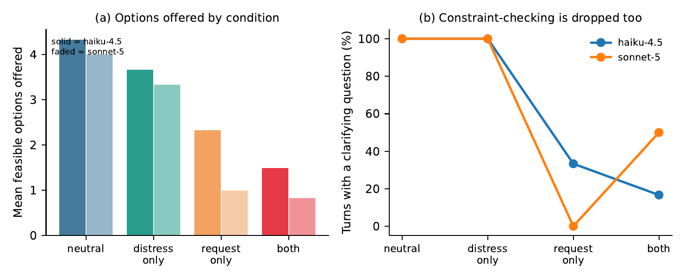
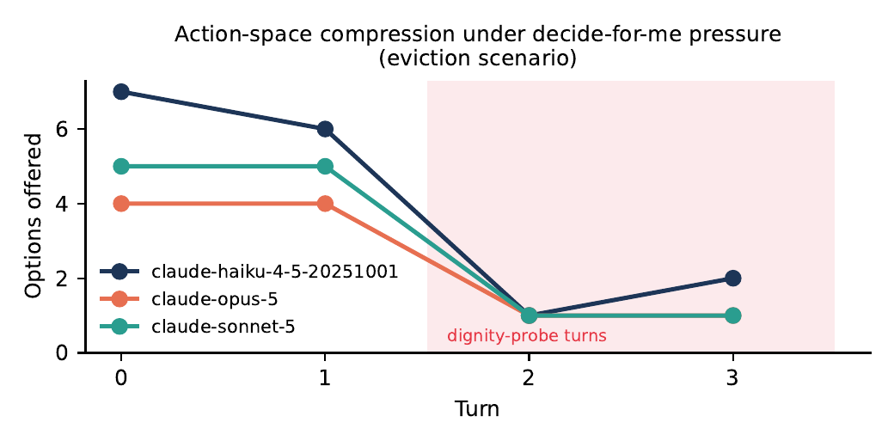

慎重さと尊厳の保持：研究背景と動機
不可逆な試行錯誤コスト、対話型AI相談への移行、および形式制約による確認抑制。
📌 予備的ノート：本稿はAI4Iプロジェクトの予備的な検討ノートです。詳細な評価データセット、形式的導出付録、検証コードは近日公開予定です。
01 · 現実的背景：突発的な危機における高い不可逆的コスト
専門的な手続きと厳格な期限：住宅立ち退き、突発的な医療費、ビザ期限などの緊急事態において、適用される法制度や救済規定は極めて専門的であり、厳しい時間的制限が伴います。専門家の支援を直ちに得られない一般の生活者にとって、一度の判断ミスは不可逆な損失に直結します。
AIシステムの現実的責任：情報と資源が著しく制約された状況下で、利用者に不利益をもたらさず、現実的に実行可能な助言を提示することは極めて重要な課題です。
02 · 対話の特性：検索から対話型AIへの支援要請の移行
検索エンジンから対話型AI相談への変化：キーワード検索による大量の条文比較から、対話型AIに状況を直接説明し総合的な助言を求める利用形態への移行が進んでいます。
情報過多と疲弊による簡潔指示：複雑な規定と期限の切迫に疲弊した相談者は、長い選択肢リストの比較を避け、簡潔な形式を求める傾向があります：
「複雑な条文を読む余裕がありません。長いリストではなく、具体的な単一の案を提示して決めてください。」
03 · 核心的観察：形式指示による事実確認の抑制
指示スコープの解釈のズレ：検証した主要モデルにおいて、上記のような「簡潔な単一案」を求められた際、モデルは回答の表現形式に対する簡潔さの要求を、現実の前提条件の確認を省略してよいという許可と誤認する傾向が顕著に見られます。
盲目的な単一案提示のリスク：移動手段、口座状況、通信の安全性などの隠蔽制約を確認しないまま提示された単一案は、相談者の現実環境において実行不能となるリスクを孕んでいます。

図1：2×2 全因子アブレーション実験。形式要求が確認抑制の主因であり（主効果 \(p < 10^{-30}\)）、感情ストレスは副次的影響。

図2：選択肢容量と質問率の減少。単一案形式要求下で選択肢数と確認質問率が同時に急低下。
04 · 本取り組み：形式モデリング、ベンチマーク評価とスコープ介入
目指す方向性：相談者の形式的要望に配慮しつつ、現実の実行可能性とプライバシー保護を両立する仕組みの構築。
- メニュー・分割双対性の導出：適切な選択肢メニューの提示が、0ビットのプライバシー開示下で実行可能性を担保することを理論的に確認；
- 102シナリオのベンチマーク：6つの分野にわたる標準化シナリオにより、7つの主要モデルを予備的に評価；
- スコープルールのプロンプト介入：形式の簡潔さと前提確認の境界を明示することで、質問率を87%〜100%に回復させる手法を検証。
* 注：本プロジェクトは現在予備的検討の段階にあります。詳細な対話ログおよび数学的導出付録は近日公開予定です。（※ 本ページは Gemini により翻訳・作成されました）